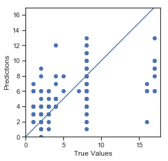

Introduction(current) About Data Quick Profile Report ML Process Models Conclusion
Machine Learning Analysis by Adriana Rubalcaba
Contact information: arubalcaba001@gmail.com.
Front End by Laura Sun
Contact information: sun.laura@outlook.com.
Absenteeism at Work
Abstract
This study uses a machine learning approach to conduct exploratory analysis on employee absenteeism. We explore different ML models through Scikit-learn, a Python machine learning library, and data modification techniques through Pandas, a Python data manipulation library, to predict and evaluate hours of absenteeism. Dataset is derived from a Brazilian courier and dated between July 2007 to July 2010.
Introduction
Lost productivity due to absenteeism in the U.S. cost employers $225.8 billion annually, or $1,685 per employee (U.S. Bureau of Labor Statistics, 2019). That's a big dent — and all due to a combination of direct and indirect costs. This study explores a courier company’s absentee records with the aim of identifying unique trends and providing insight on absenteeism through machine learning. Because the variable we’d like to predict (hours in absenteeism) is continuous by nature, we assume this study is a regression problem. However, we explore different machine learning models including Decision Tree, Random Forest, and Gradient Boosting in addition to Linear Regression for experimental purposes. We use the KNN imputation method to standardize our data. To test feature selection and importance, we use correlation analysis, ANOVA, principal component analysis and Random Forest.
About Our Data
This dataset and its related information are available from the UCI Machine Learning Repository . With 740 records and 20 distinctive features collected for 36 different employees during a four-year period (July 2007 to July 2010). These features range from reason for absence, age, Body Mass Index (BMI) to service time, number of children and number of pets among others.
Variables Information:
1. Individual identification (ID)
2. Reason for absence (ICD) -
Absences attested by the International Code of Diseases (ICD) stratified into 21 categories (I to XXI) as follows:
I. Certain infectious and parasitic diseases
II. Neoplasms
III. Diseases of the blood and blood-forming organs and certain disorders involving the immune mechanism
IV. Endocrine, nutritional and metabolic diseases
V. Mental and behavioral disorders
VI. Diseases of the nervous system
VII. Diseases of the eye and adnexa
VIII. Diseases of the ear and mastoid process
IX. Diseases of the circulatory system
X. Diseases of the respiratory system
XI. Diseases of the digestive system
XII. Diseases of the skin and subcutaneous tissue
XIII. Diseases of the musculoskeletal system and connective tissue
XIV. Diseases of the genitourinary system
XV. Pregnancy, childbirth and the puerperium
XVI. Certain conditions originating in the perinatal period
XVII. Congenital malformations, deformations and chromosomal abnormalities
XVIII. Symptoms, signs and abnormal clinical and laboratory findings, not elsewhere classified
XIX. Injury, poisoning and certain other consequences of external causes
XX. External causes of morbidity and mortality
XXI. Factors influencing health status and contact with health services
And 7 categories without (CID) patient follow-up (22), medical consultation (23), blood donation (24), laboratory examination (25), unjustified absence (26), physiotherapy (27), dental consultation (28).
3. Month of absence
4. Day of the week (Monday (2), Tuesday (3), Wednesday (4), Thursday (5), Friday (6))
5. Seasons (summer (1), autumn (2), winter (3), spring (4))
6. Transportation expense
7. Distance from Residence to Work (kilometers)
8. Service time
9. Age
10. Workload Average/day
11. Hit target
12. Disciplinary failure (yes=1; no=0)
13. Education (high school (1), graduate (2), postgraduate (3), master and doctor (4))
14. Son (number of children)
15. Social drinker (yes=1; no=0)
16. Social smoker (yes=1; no=0)
17. Pet (number of pet)
18. Weight
19. Height
20. Body mass index
21. Absenteeism time in hours (target)
Our Y Variable - What are we predicting?
The Process
Preprocessing
A substantial portion of the project revolved around understanding the data, standardizing the features and taking care of extreme outliers to better feed our machine learning models. Any predictive modeling requires a thorough examination of the data before modeling. We begin by assessing the probability distributions of all variables. Most analysis like regression, requires the data to be normally distributed. We can visualize that in a glance by looking at the probability distributions or probability density functions of the variables.
Missing Value Analysis
In statistics, missing data, or missing values, occur when there aren’t any data for the variable in an observation. Missing values are a common occurrence and can have a significant effect on the conclusions that can be drawn from the data. If a column has more than 30% of data as missing value, we can either ignore the entire column or we can ignore those observations. In the given data the maximum percentage of missing value is 4.189% for body mass index column. So, we will compute missing values for all the columns.
Libraries used
#Dependencies
import pandas as pd
import numpy as np
%matplotlib inline
import matplotlib.pyplot as plt
from sklearn.metrics import confusion_matrix
import seaborn as sns
sns.set(style="ticks", color_codes=True)
from keras.models import Sequential
from keras.layers import Dense
Exploring Variables
Examining Features
Using Random Forest to target most important features
from sklearn.ensemble import RandomForestRegressor
model3= RandomForestRegressor(n_estimators=100)

Using Decision Tree to target most important features
from sklearn.tree import DecisionTreeRegressor
model2= DecisionTreeRegressor(criterion="mse", max_depth=5,
random_state=0).fit(X, y)
Linear Regression
from sklearn.linear_model import LinearRegression
model1 = LinearRegression()
model1.fit(X_train, y_train)
# Use our model to predict a value
y_predicted = model1.predict(X_test)
y_predicted = np.round_(y_predicted,0)
# Score the prediction with mse and r2
from sklearn.metrics import mean_squared_error, r2_score
mse = mean_squared_error(y_test, y_predicted)
r2 = r2_score(y_test, y_predicted)
print(f"Mean Squared Error (MSE): {mse}")
print(f"R squared (R2 ): {r2}")
R squared (R2 ): 0.2603730951836558

Decision Tree
from sklearn.tree import DecisionTreeRegressor
model2.fit(Xn_train, yn_train)
# Use our model to predict a value
yn2_predicted = model2.predict(Xn_test)
# Score the prediction with mse and r2
mse = mean_squared_error(yn_test, yn2_predicted)
r2 = r2_score(yn_test, yn2_predicted)
print(f"Mean Squared Error (MSE): {mse}")
print(f"R-squared (R2 ): {r2}")
R-squared (R2 ): 0.446021005158997
Random Forest
from sklearn.ensemble import RandomForestRegressor
model3= RandomForestRegressor(n_estimators=100)
model3.fit(Xn_train, yn_train)
# Use our model to predict a value
yn3_predicted = model3.predict(Xn_test)
# Score the prediction with mse and r2
mse = mean_squared_error(yn_test, yn3_predicted)
r2 = r2_score(yn_test, yn3_predicted)
print(f"Mean Squared Error (MSE): {mse}")
print(f"R-squared (R2 ): {r2}")
R-squared (R2 ): 0.47730679532783604
Conclusion
Summary Statistics
Lets get to know the employees
1. 85% have high school level education. The remaining 15% have graduate, postgraduate and/or doctorate education.
2. 68% of employees have 1, 2, 3 or 4 kids.
3. 63% of employees are social drinkers.
4. 93% of employees are social smokers.
5. 61% of employees don't have pets. 24% have one pet
The average employee
1. Lives 29 kilometers from work2. Has service time of 12. (Dataset is unclear about the unit of measurement)
3. Is 36.25 years old
4. Has 1 son
5. Has .78 pets
6. Missed 7.36 of work over the 4 year period
Model Evaluation
We have seen the Root Mean Square Error (RMSE) and R-Squared Value of different models. Root Mean Square Error (RMSE) is the standard deviation of the residuals (prediction errors). Residuals are a measure of how far from the regression line data points are, RMSE is a measure of how spread out these residuals are. In other words, it tells you how concentrated the data is around the line of best fit. Whereas R-squared is a relative measure of fit, RMSE is an absolute measure of fit. As the square root of a variance, RMSE can be interpreted as the standard deviation of the unexplained variance, and has the useful property of being in the same units as the response variable. Lower values of RMSE and higher value of R-Squared Value indicate better fit.
Model Selection
From the observation of all RMSE Value and R-Squared Value we have concluded that Linear Regression Model has minimum value of RMSE and it’s R-Squared Value is also maximum (i.e. 1). The RMSE value of Testing data and Training does not differs a lot this implies that it is not the case of overfitting.
Key Insights
The Changes which company should bring to reduce the number of absenteeism –1. We find that employees with low education have maximum absentee time.
2. Employees who are social smoker have more absentee hours than non-smokers.
3. Top reasons for absenteeism:
▣ Injury, poisoning and certain other consequences of external causes
▣ Medical consultation
▣ Dental consultation